| |
JAPAN 2018!!! =)
Osaka Universal Studios Japan Parque Espana Nagashima Spaland
Hiroshima & Kyoto
Tobu Zoo
Fuji-Q Highlands
Tokyo Joypolis Tokyo Dome City Yomiuriland Sea Paradise Hamanako Pal Pal Tokyo Disney Resort Yokohama Cosmoworld
Toshimaen
All right. Osaka was a ton of fun, but sadly, this part of the trip is now coming to an end.
Time to get on the Shinkansen back up to Tokyo.
Bye Osaka. I really liked staying in you for the first week of my Japan trip.
Brief stop in Nagoya. I flirted with the idea of spending a day doing regular tourist stuff in Nagoya, but that never worked out.
Riding through Kakegawa. So apparently, this town is most known for Tea. Now specifically Green Tea, which is not my kind of tea. But even so, still seems cool. Maybe another time.
Hey look. I see some Pokemon on the Yamanote Line.
YAY!!! WE MADE IT!!!!
OK. I'm in the middle of Tokyo (specifically Akihabara), and...there's a go-kart. Seriously, it looks like Mario Kart is literally just going on in the middle of Tokyo! I LOVE JAPAN!!!
All right. This is where we'll be staying for the next two weeks. Grids Akihabara.
So, this is a hotel. However, it's a different kind of hotel. It's not a standard hotel, or a motel, or a hostel. Nope, this is a Capsule Hotel.
Yep. You know those Capsule Hotels you constantly see articles on, I did that. I know I considered that, but what really made me choose to spend two weeks in one of these was the price. Cause...these things are F*CKING CHEAP!!! They're like hostels.
It's sort of like staying in the hostel, except while there's far more people staying here, you interact with them way less. There's pretty much no interaction between other guests. So it all works out. You do have privacy. And hey. Those capsules are actually cozy and kind of nice. It's not as bad as some of you are thinking. ;)
Welcome to Akihabara!
Wait. I thought we were in Akihabara. What the hell is Akiba?
Time for some good authentic Japanese food.
Mmm. They certainly give you a lot of dumplings here. Throw in fried chicken, rice, soup, and beer, and you've got a good meal.
If you're staying in Akihabara, pay attention to this building. It's a good marker.
Video game nerds are cumming right now.
And of course, if Arcades are you're thing, well...They've got a really good one with the Gigo Sega Arcade.
Better get used to this, as I'm gonna be stopping by here for the next weeks. =)
You know how Akihabara is not only the Video Game & Anime capital of Tokyo, but it's also where all the electronics come from.
OK. What the hell is this dog? I see that he's at a stand selling the Google Pixel 3. But...I don't see him as a mascot for that. Is he only in Japan? I want answers.
Hey you! I know you're a geeky tourist! I bet you like my video game! So why don't you eat at my resteraunt! It's Sonic approved!
And of course, my hotel is right by yet another river.
Good morning Akihabara. So many resteraunts to choose from! So much stuff to see here in Akihabara!
Hmm. What'a popular Japanese snack we haven't gotten yet? Oh! I know! Taiyaki!
So Taiyaki is basically a fish shaped pastery, with some sort of filling. Usually red bean, but I think mine was custard. And because this is Akihabara, the Geek Capital of Japan, its themed to the Fish Pokemon (Magikarp). =P
So we were considering going to another famous temple (Nikko), but after looking at it on Google Maps, it's pretty far away, and it would be a stretch to do both that and Tobu Zoo in one day. Plus, I had gotten my temple fix in Kyoto, so we decided to just hang out in Akihabara for the morning (There's always next time).
I know some people are gonna really have fun with these Anime characters. =P
We already had the Pokemon Taiyaki. Might as well keep going on the Pokemon trend.
 "Pikachu! Pika Pika Pikachu! Pika Pika Pika Pika PIKAAAAAAAAAAAAAAAAAAAA!!!!! *sigh*chu."
"Pikachu! Pika Pika Pikachu! Pika Pika Pika Pika PIKAAAAAAAAAAAAAAAAAAAA!!!!! *sigh*chu."
AHH!!! ZOMBEARS!!! They're eating my brains, but they're so cute!
(So, it turns out that Zombear is the mascot for a Bear Curry. Seriously, Curry with Bear Meat. Don't worry. He also sells something like Top Ramen. Intersting. He's primarily in Hokkaido, where there are far more bears. But he made his way down to Akihabara. Zombear is even on Twitter. BEST MASCOT EVER!!! Did I mention that I love Japan?)
Dude. Why are you wasting your money? You know those claw games are rigged?
Hey Logan! Tell me again how much you love Totoro despite having never seen "My Neighbor Totoro" (BLASPHEMOUS!! SHAME ON YOU!!)! =P
Hello Gigo Sega Arcade. Today is another good day to waste all your yen.
Stealings bad. M'kay.
OK. What the hell is up with putting Mickey Ears on everything? They're on Charlie Brown, the Minion, Miguel....it's creepy looking. Seriously, WTF?
Akihabara is so cool. =)
Just so you know, Kit Kats in Japan aren't like in America. They're not just another chocolate candy. They're super popular, used to symbolize good luck, and come in so many different flavors.
To continue with the Pokemon theme and to try something new from the vending machines, insteading of getting Pocari Sweat or Match, I decided to try one of the Pokemon drinks to see what they were. And while Pokemon Soda is a real thing, that's not what I got. What I got was a vegtable drink similar to V8 that teamed up with Pokemon in an attempt to get kids to make healthier choices. DAMN YOU POKEMON!!! YOU TRICKED ME INTO DRINKING JAPANESE V8 (I think this is the stuff they have at Epcot representing Japan)!!!!
Well, that was a fun morning. Time to get on the train and head over to Tobu Zoo.
Oops. We got at the wrong station. We're f*cking idiots. Back on the train!
"OMG! Shut up Kevin! I can use this as an excuse to get more folders!"
OK. I know that they have a theme park and a zoo around here somewhere. I just don't know where.
So while walking to Tobu Zoo from the train station, we stumble across this random park. Some local children are playing here, and because we're two white dudes, we stick out like sore thumbs. So the children notice us, wave to us, and thank us for visiting their small town in broken English. No problem Japanese kids. Your town has an Intamin Mega-Lite in it. So it's pretty cool. =)
 *gasp* Look what I see inbetween the houses! It's a roller coaster!
*gasp* Look what I see inbetween the houses! It's a roller coaster!
Come on! The Intamin Mega-Lite is just across the creek!
 WE MADE IT TO TOBU ZOO!!!
WE MADE IT TO TOBU ZOO!!!
Information on Tobu Zoo can be found here.
Really like the local art they have at the entrance to the park.
The hippos welcome you to Tobu Zoo.
You know, for the past 3.5 days, I've just been acting like this is a regular standard tourist trip to Japan. Forgot that this was a coaster trip since I hadn't been to an amusement park since Nagashima Spaland on Halloween. So I'm happy to be here at Tobu Zoo.
Hey look! I found the reason why I put Tobu Zoo on my itenerary for the Japan Trip! Star attraction of the park right there! =)
"Pika Pika! Don't you wanna ride the Pikachu ride!"
 All right. Enough joking around. Time for the real reason we made it out to Tobu Zoo.
All right. Enough joking around. Time for the real reason we made it out to Tobu Zoo.
 WE GET TO RIDE ANOTHER INTAMIN MEGA-LITE TODAY!!! SQUEE!!!
WE GET TO RIDE ANOTHER INTAMIN MEGA-LITE TODAY!!! SQUEE!!!
 I absolutely LOVED its Danish twin, Piraten. So I was super happy to be riding its clone today.
I absolutely LOVED its Danish twin, Piraten. So I was super happy to be riding its clone today.
 Everything I said about Piraten also applies to Kawasemi. It's so good!
Everything I said about Piraten also applies to Kawasemi. It's so good!
 Damn fence getting in the way of my Kawasemi shot.
Damn fence getting in the way of my Kawasemi shot.
 I know we've sort of been caught up in the whole Intamin Mega-Lite that we almost forgot that there's another big Intamin coaster for us to ride here.
I know we've sort of been caught up in the whole Intamin Mega-Lite that we almost forgot that there's another big Intamin coaster for us to ride here.
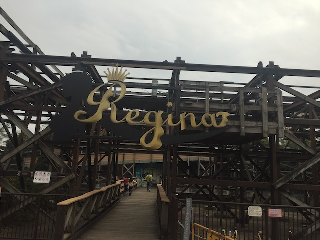
Yep. We also get to ride Regina, the parks Intamin Woodie.
"Princess Cinderella, the Intamin Woodie awaits you."
Warning: If you lean foreward on Regina, you die! The cartoon bear says so!
 No, while Regina may be an Intamin Woodie, it's a regular woodie. Not one of their Plug'N'Plays that produce some of the best wooden coasters on the planet.
No, while Regina may be an Intamin Woodie, it's a regular woodie. Not one of their Plug'N'Plays that produce some of the best wooden coasters on the planet.
 But don't worry. While Regina isn't anywhere as good as Balder and El Toro, it's still a really good wooden coaster.
But don't worry. While Regina isn't anywhere as good as Balder and El Toro, it's still a really good wooden coaster.
 It's got some decent speed and actually some good airtime. It's pretty underrated.
It's got some decent speed and actually some good airtime. It's pretty underrated.
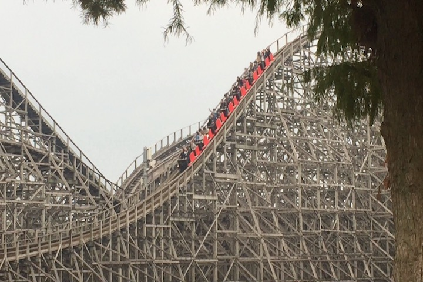
Fun fact. This is the only wooden coaster we'll be riding on the Japan Trip.
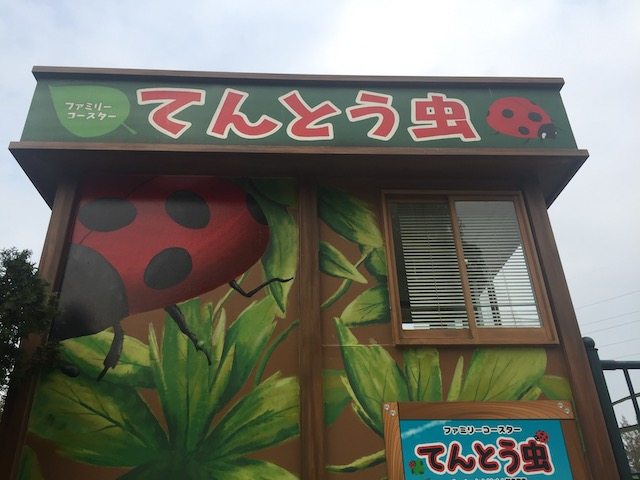
All right. Just one more credit left for us to get.
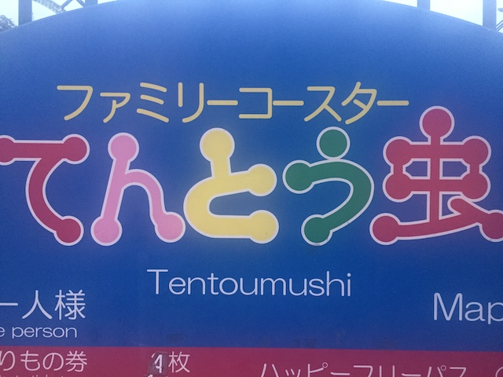
Ugh. Time to whore out their kiddy coaster.
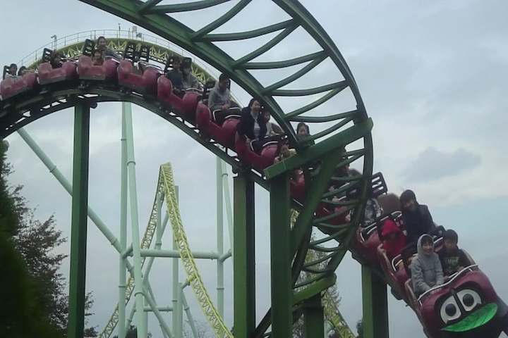
"Boy. These Westerners sure are strange. Why are they riding our childrens coaster?"
 OK. I'm starving time for lunch. We stop at this random stand to eat. I blindly order what Logan ordered without looking at it. BIG MISTAKE on my part. Because I get the food, and...it's chow mein noodles. Sounds good. Covered in eggs. UGH!!! This sucks as (WARNING!!! SUPER UNPOPULAR OPINION AHEAD!!!) I hate eggs. No really. I hate eggs. I know they're super popular and most people like them, but I just can't stand the taste of them. I'm not gonna go into how they taste to not piss off people who like them (which seems to be EVERYONE except for other people in my immediete family), but yeah. I really STRONGLY dislike the taste. One of my least favorite foods. So I could only eat the half of the chow mein the eggs didn't touch. So yeah. Going out to breakfast is a pain in the ass since they infect damn near everything (So often, I feel like I'm limited to just pancakes). Lesson learned. Look at the f*cking picture of what you're about to order dumbass! But hey. At least I can point to this and say to people who say "How can you not like eggs!? Give them a try!", "I did asshole. I'm an adult now, and I still hate them".
(Oh, and BTW, the french fry bag with the bear is awesome. I love that).
OK. I'm starving time for lunch. We stop at this random stand to eat. I blindly order what Logan ordered without looking at it. BIG MISTAKE on my part. Because I get the food, and...it's chow mein noodles. Sounds good. Covered in eggs. UGH!!! This sucks as (WARNING!!! SUPER UNPOPULAR OPINION AHEAD!!!) I hate eggs. No really. I hate eggs. I know they're super popular and most people like them, but I just can't stand the taste of them. I'm not gonna go into how they taste to not piss off people who like them (which seems to be EVERYONE except for other people in my immediete family), but yeah. I really STRONGLY dislike the taste. One of my least favorite foods. So I could only eat the half of the chow mein the eggs didn't touch. So yeah. Going out to breakfast is a pain in the ass since they infect damn near everything (So often, I feel like I'm limited to just pancakes). Lesson learned. Look at the f*cking picture of what you're about to order dumbass! But hey. At least I can point to this and say to people who say "How can you not like eggs!? Give them a try!", "I did asshole. I'm an adult now, and I still hate them".
(Oh, and BTW, the french fry bag with the bear is awesome. I love that).
Wi-Fi is the best thing in the vending machine. =)
After downing the bland Pokemon Veggie Drink and dealing with gross eggs, I'm so happy to wash the crap down with Pocari Sweat. I love that sh*t.
Man, this park looks really nice at night.
Hmm. What's up with all the lights over here?
So yeah. We made it to Tobu Zoo just in time for their Winter Illumination.
So yeah. This is the parks Christmas Celebration. Uh...last time I was at a park was Nagashima Spaland on Halloween, which was just 4 days ago. Seems a little fast.
HEY TOBU ZOO!!! IT'S F*CKING NOVEMBER!!! TAKE DOWN YOUR CHRISTMAS DECORATIONS!!!
OK. What the hell sort of J-Pop song are they playing here? I reviewed my Tobu Zoo footage, and the song they're playing here is...intersting to say the least.
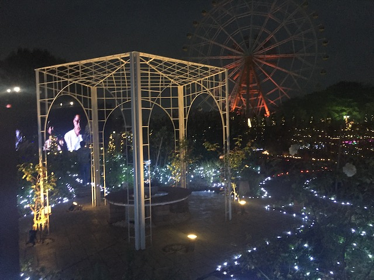
Deck the pagoda with bows of holly.
So yeah. People who know me know that Christmas Stuff out of season really annoys me (More so in January than in November, but still. You're jumping the gun here), but I do have to admit. Their Christmas Special is REALLY well done. And I mean REALLY well done.
I have to admit. The flower made of lights just looks absolutely great.
HOLY CRAP!!! The light package Tobu Zoo has is absolutely great.
The craziest thing is that for as amazing as the Tobu Zoo Christmas Light Festival is, the other park light festivals are even better (Look for that in future Japan updates). =)
Man. Even the tunnels they have just look amazing. =)
Good thing I'm just a cardboard cut-out. Because real zebras are bastards.
Please tell me there aren't any lions over there ready to eat me.
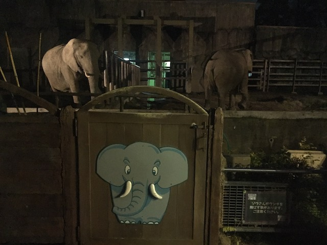
Jolly Jolly Jolly. I'm an elephant. Give me a Mega-Lite.
 This has to be the longest Aurora Australis I have ever experienced in my life.
This has to be the longest Aurora Australis I have ever experienced in my life.
To bring in more of the too early Christmas cheer, we brought some light animals to graze around the light grass.
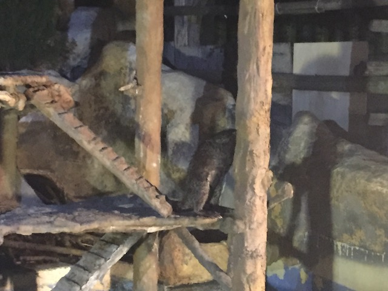
Just a quick reminder that Tobu Zoo isn't just an amusement park, but is also in fact, a real zoo.
 Come get your Tobu snacks from the Tobu Zoo!
Come get your Tobu snacks from the Tobu Zoo!
Unless these condors are also home to one of the best cliff jumping spots on Earth, I'm not interested.
 You may not really be able to see the condors up close, but that's fine. I've seen condors up close before.
You may not really be able to see the condors up close, but that's fine. I've seen condors up close before.
Hey look! A sundial! I always wanted to use one of....it's night time. This is useless. DAMN IT!!!
I found the powered coaster for you Logan.
"SHUT UP KEVIN! THIS COUNTS AS A CREDIT!"
I decided not to ride this since, it doesn't count as a credit, I was really unimpressed with the Nagashima Spaland pseudo-credit, and figured that I'd have more fun filming Logan making an ass out of himself than riding with him.
I love the light Christmas Tree and the heart over the water. Looks so cool. =)
"Yo! I'm the Tobu Zoo (what animal am I?) Mascot! I'm just chilling, hanging out in all the amazing Christmas Lights we put out!"
I know this is just an ordinary Waveswinger, but with all the lights for the Christmas Festival, it just looks so cool.
I think another reride on Regina is in order.
 I know it's easy to overlook Regina because of the Intamin Mega-Lite in the park, but don't. This ride is really fun. =)
I know it's easy to overlook Regina because of the Intamin Mega-Lite in the park, but don't. This ride is really fun. =)
Only people willing to ride Regina with us Westerners are the gasoline tanks.
While we didn't get an ERT session on Kawasemi like we did with Piraten, the park is empty enough that we got to marathon the crap out of it and make our own de-facto ERT session.
 This is yet another coaster that proves the rule that "Size Doesn't Matter".
This is yet another coaster that proves the rule that "Size Doesn't Matter".
Don't be fooled. There's some SERIOUS ejector air here!!!
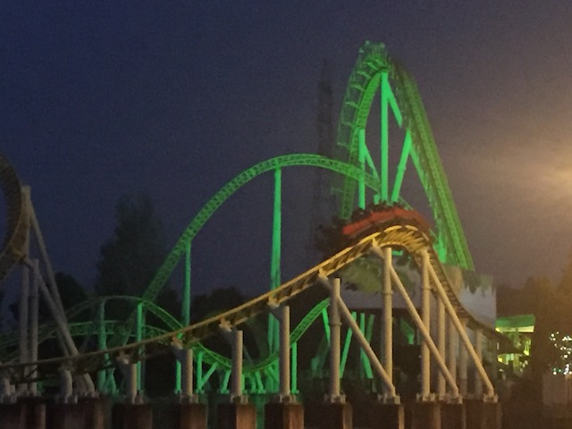
YOINK!!! EJECTOR AIR!!!
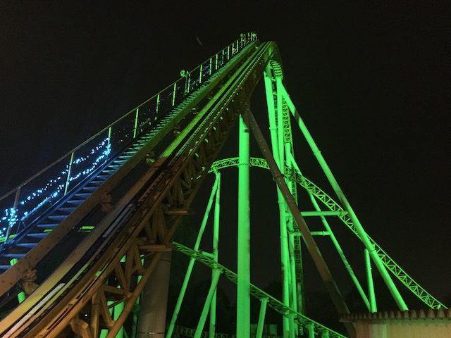
I really hope that a Mega-Lite can find its way into my home country because these rides are really good. I'd like to see a Mega-Lite that's not in Eurasia.
While I did shoot some Kawasemi video, it's not a lot, and I think the amazingness of an Intamin Mega-Lite can be better shown through my footage of its Danish clone, Piraten (which features a POV). ;)
Ooh. Look at the pretty li...What's this?
 Yeah. We couldn't leave Tobu Zoo without doing the Galaxy Walkers.
Yeah. We couldn't leave Tobu Zoo without doing the Galaxy Walkers.
OK. So some of you may be wondering what the hell Galaxy Walkers is. Well, it's a mirror maze where you get split off into two teams.
Each team has to memorize a card and then replicate the card by pushing the right buttons. So...it's a mirror maze, cross bred with Simon.
"I wish I was Big."
Come on. Grab your sh*t.
 "We have no idea what the hell we're doing."
"We have no idea what the hell we're doing."
But seriously. This is a really cool maze that I'm happy I checked out while at Tobu Zoo.
Well so long Tobu Zoo. I really liked your park. You have an amazing Mega-Lite, your woodie is good, and you put on an amazing Christmas Light Festival. I highly recommend the park. =)
OMG! Check out this Mickey Mouse I got in Akihabara this morning!
"Excuse me sir! You have to let me back through the exit gates! No! I'm not trying to sneak on the train without paying! I left my wallet over there! Yes! I really am that stupid! Please let me through!"
DUR!! I nearly lost my wallet in a foreign country and only got it back because Japanese people are very nice!
 Here's a little reason why I love Tokyo so much. See these stairs. They're just random stairs. Nothing important. And yet, there's a whole cool light show that they have. So tempted to use my footage of these stairs to make a GIF of these stairs changing colors and flashing. I just love that. =)
Here's a little reason why I love Tokyo so much. See these stairs. They're just random stairs. Nothing important. And yet, there's a whole cool light show that they have. So tempted to use my footage of these stairs to make a GIF of these stairs changing colors and flashing. I just love that. =)
Aww. The escelator doesn't change color. It's just yellow. Aww. Lame! I'm spoiled by the stairs. =(
I know I've been in Japan for over a week now, but....HOLY SH*T!!! I'M THE HEART OF FREAKING TOKYO RIGHT NOW!!!
I know I've seen so many people orgasm at just how amazing Tokyo is, but, when you're here, smack dab in the middle....WOW!!!
Sorry Copenhagen. I still love you, but you're no longer my favorite city.
TOKYO DISNEY ADVERTISING!!!! Seriously, that place is SO GOOD!!!
I know I'm not the biggest Starbucks fan, but I kind of wish I went to Japanese Starbucks cause that Strawberry Cake Frappachino looks really good and I think is another Japan Only drink.
OK. So you've seen me rave and go nuts over how good Japanese McDonalds is and how its so much better than American McDonalds (I still miss it. It's just not the same here). So that got me thinking about other Fast Food Chains. So...let's see if Japanese Wendys is anything special.
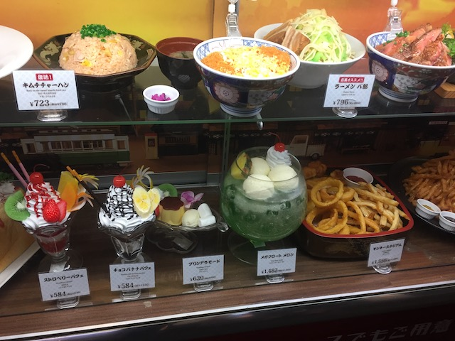
HOLY SH*T!!! LOOK AT THAT MEGA-MELON FLOAT!!! It's being showcased at some resteraunt in the ally I walked by to get from my hotel to the Akihabara Train Station, so I walked by this every day for 2 weeks! That thing looks so huge and so good! I'm so tempted to just get that damn float!
All right. Back to Japanese Wendys, which we ate at the hotel.
The Burger was good, but it seemed like a standard American Burger. I can't remember if I ordered a special Japanese Burger, if so, it wasn't memorable enough to stand out compared to the standard Wendys burgers.
But that's OK, because what does stand out at Japanese Wendys are the fries. HOLY CRAP!!! BEST FAST FOOD FRIES EVER (Aside from In'N'Out's Animal Fries)!!! They have all sorts of different seasoning flavors, and those really give the fries a nice punch! I love them! LOADED FRIES KICK ASS!!!
Oh, and for gods sake, PUT BOBA TEA ON YOUR AMERICAN MENU!!! That Strawberry Boba (Called Pearl Tea here) was AMAZING!!!
"My burger may have been contaminated by my french fry ketchup, but I don't care! I'm in Tokyo, eating Japanese Wendys and loving life! I sure hope some old Russian dude doesn't try and start a conversation, not hearing that we can't drink tonight!" (Sorry dude, but I can't drink tonight. Gotta get up at Ass O'Clock tomorrow morning to go to a certain major Japanese park).
Fuji-Q Highlands
Home
|